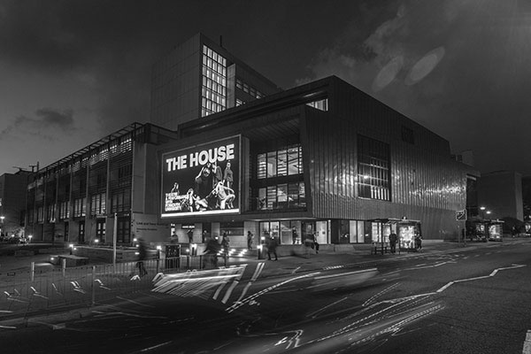
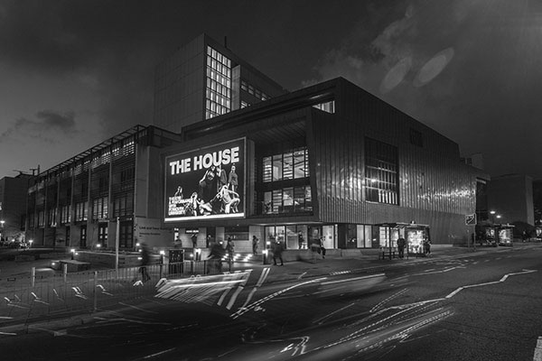

HOT ’16 Art and Design Degree Show
abcdefghijklmnopqrstuvwxyzABCDEFGHIJKLMNOPQRSTUVWXYZ0123456789
June will see the launch of HOT ’16, Plymouth University’s Art and Design Degree Show.
Exceptional work from graduating honours degree students will be shown, sold, or commissioned from 3D design, fine art, illustration, media and TV arts, photography, digital media and animation, architecture, graphic communication with typography, and digital art and design.
Inspired and inspiring, join us in celebrating Plymouth University graduating students’ inventiveness.
Date/time: 11-23 June, Monday - Friday: 13:00-16:00, Saturday 11:00-16:00
Venue: Peninsula Arts Gallery, Roland Levinsky Building, Scott Building and the Royal William Yard: Mills Bakery
Ticket information: Free admission